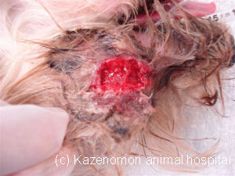
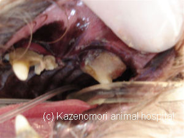

** Topic 2011年 6月**

●眼の下の化膿；根尖周囲膿瘍
ヨークシャーテリアの患者さんです。
左側の?に大きな化膿がみられるとのことで、来院されました。
飼い主さんは、お留守番をさせている間に、けがをしてしまったと思われておりましたが、実は、歯が原因で起きたことでした。
頭部レントゲン検査から、上顎第４前臼歯の歯槽骨が著しく吸収されており、歯周病による根尖周囲膿瘍と診断しました。
イヌおよびネコの第４前臼歯は上顎で最も大きな歯であり、歯根が３本ある歯です。そのため、歯周病が進行して、歯牙が動揺するようになっても、自然に抜けてくることはほとんど有りません。そのため、歯周病原細菌の病巣となる歯周組織で、細菌が多く繁殖してしまい、結果、大きな化膿巣が形成されてしまいます。
原因となった上顎第４前臼歯
このような、病態の場合、患歯の抜歯が、急速な治癒に望ましく、本症例も患歯および歯周病が進行した歯牙の抜歯を行いました。
たかが歯？されど歯！ですね。

